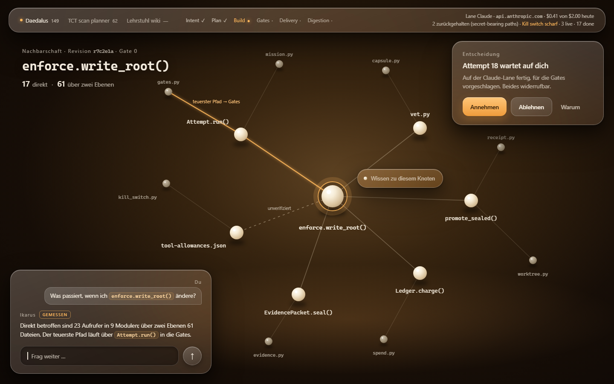
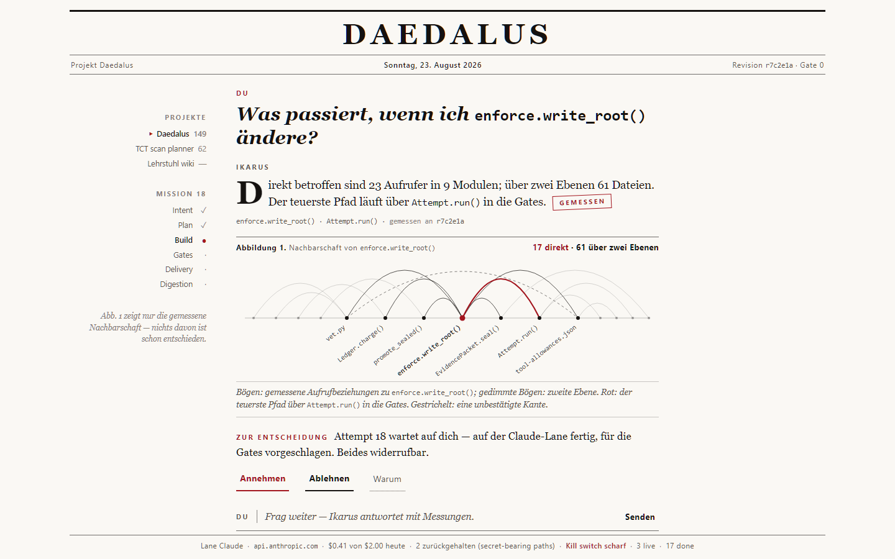
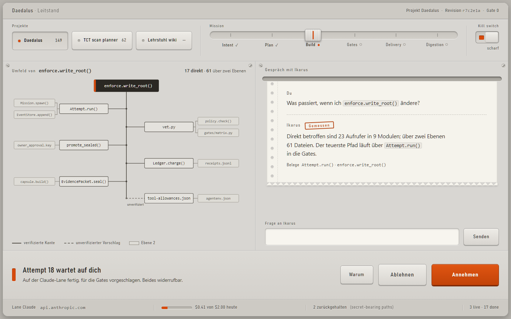
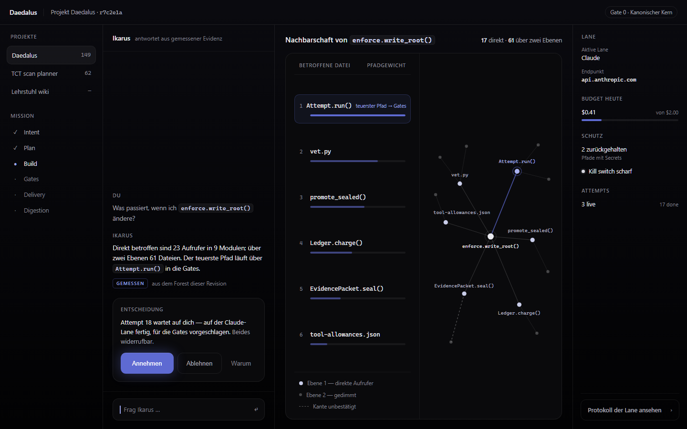
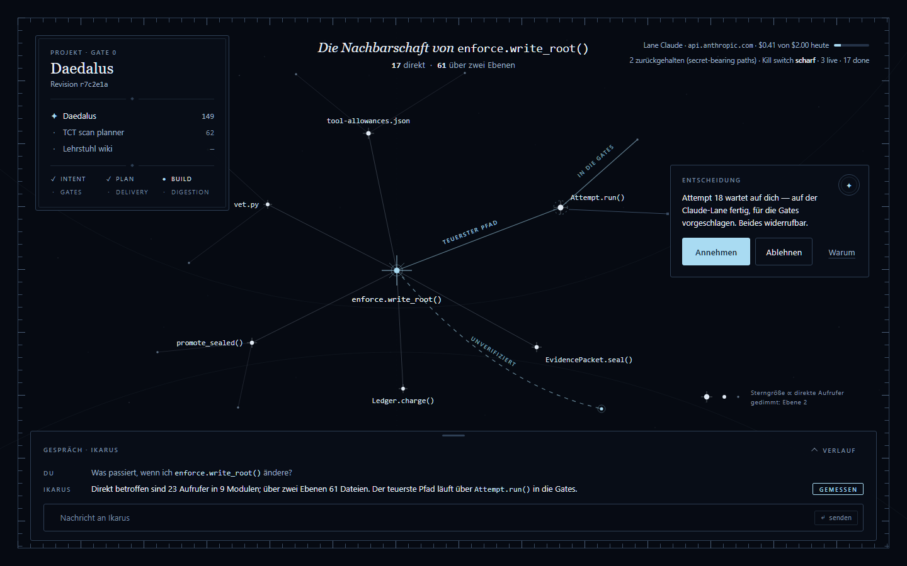
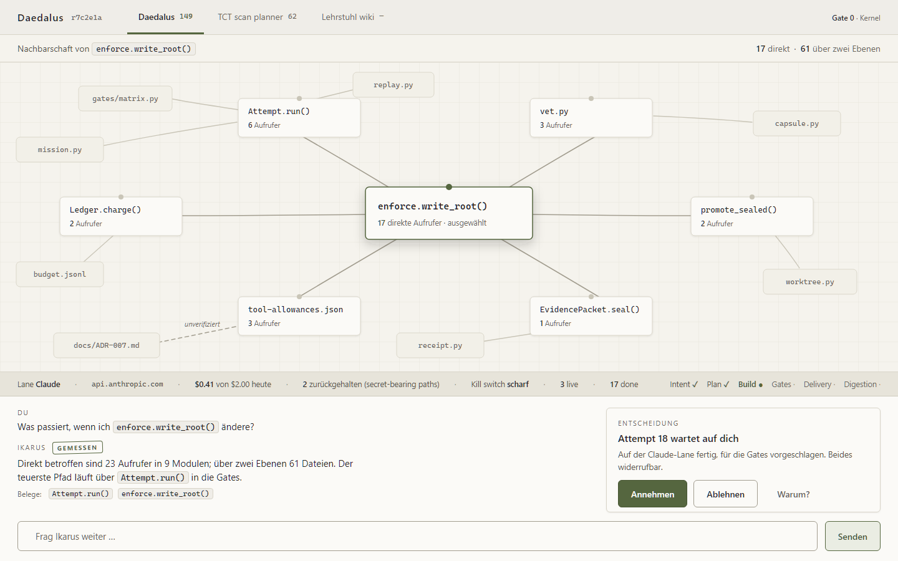

Sechs Entwürfe
kammer · Die Kammer
The neighbourhood is the room: one warm-lit chamber of pearl nodes carries the whole product, and the interface floats in it as three small sheets of glass.

In echt öffnen → /kammer.htmldepesche · Die Depesche
The conversation set as a newspaper front page: the question is the headline, the graph is Abbildung 1, the state is the colophon.

In echt öffnen → /depesche.htmlleitstand · Der Leitstand
A Braun 1965 instrument panel: warm matte hardware, one signal orange, the graph as a wiring diagram and the decision as two physical keys.

In echt öffnen → /leitstand.htmlnachtfenster · Das Nachtfenster
Boring discipline done with love: a four-pane night window where the table and the map are the same object seen twice.

In echt öffnen → /nachtfenster.htmlsternkarte · Die Sternkarte
Messung als Kartografie: die Aufrufer-Nachbarschaft als präziser Sternatlas, die Entscheidung als versiegelte Randnotiz am betroffenen Stern.

In echt öffnen → /sternkarte.htmlwerkstatt · Die Werkstatt
The graph as a workbench board: symbols pinned as cards on a light board, the conversation as the bench drawer beneath.

In echt öffnen → /werkstatt.html